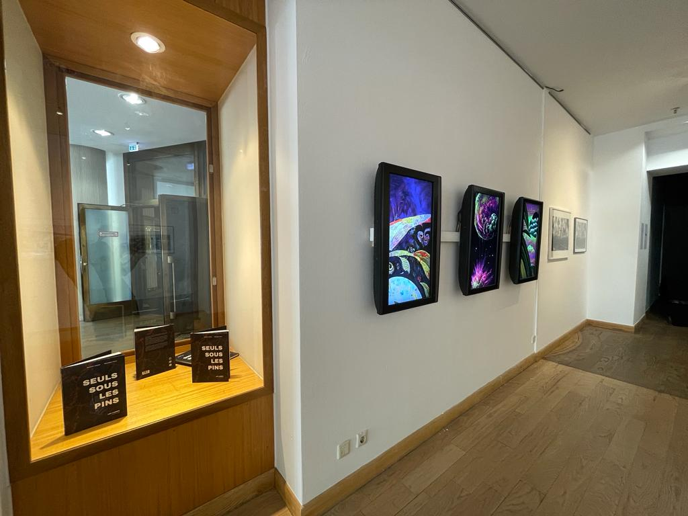
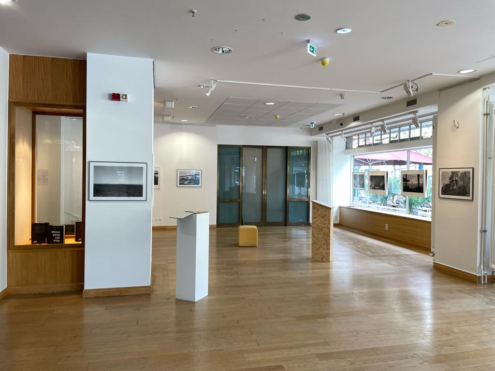

In summer 2023, I've met Maurice Lebrun, a French photographer (among others). He told me he'd like it to be possible to talk to Henri Rousseau during one of his exhibition.
On the occasion of one of his photo exhibition at the French Institute in Berlin, Maurice Lebrun and I created a staging that allows us to talk with the late Douanier Rousseau. Maurice has been working on creating photos inspired by the Douanier Rousseau's paintings.
His project is named "Memories of Lazarus" and combines photograhy with AI models (in particular GANs).


In concrete terms, we've created a relatively simple architecture, "connecting" a speech-to-text model, GPT4 prompted, and a text-to-speech model. The whole thing was assembled on a PureData + Streamlit interface, in a dedicated room within the exhibition. It took a lot of work and it was more difficult than we expected, but the result is great! Moreover, Maurice Lebrun's work is really cool!